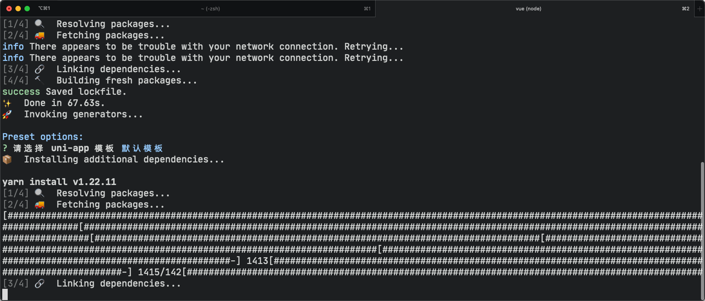
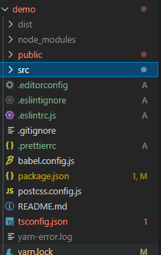
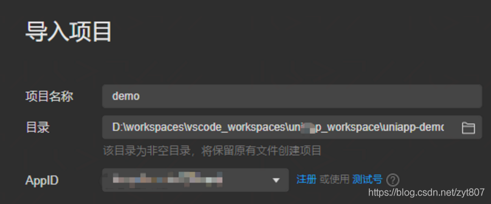

工具
VSCode
插件
gitignore
uniapp-snippet
uview-snippet
uni-app安装
`
全局安装vue-cli
npm install -g @vue/cli
创建uni-app使用正式版（对应HBuilderX最新正式版）
vue create -p dcloudio/uni-preset-vue demo

$ vue create -p dcloudio/uni-preset-vue demo
Fetching remote preset dcloudio/uni-preset-vue...
? Your connection to the default yarn registry seems to be slow.
Use https://registry.npm.taobao.org for faster installation? Yes
Vue CLI v4.5.13
✨ Creating project in /Volumes/E/JYW/孔店村平台/programs/demo.
⚙️ Installing CLI plugins. This might take a while...
yarn install v1.22.11
info No lockfile found.
[1/4] 🔍 Resolving packages...
[2/4] 🚚 Fetching packages...
info There appears to be trouble with your network connection. Retrying...
info There appears to be trouble with your network connection. Retrying...
[3/4] 🔗 Linking dependencies...
[4/4] 🔨 Building fresh packages...
success Saved lockfile.
✨ Done in 67.63s.
🚀 Invoking generators...
Preset options:
? 请选择 uni-app 模板 默认模板
📦 Installing additional dependencies...
yarn install v1.22.11
[1/4] 🔍 Resolving packages...
[2/4] 🚚 Fetching packages...
[##############################################################################################################################################[##################################################################################################################################[##################################################################################[##################################################################################################[#####################################################################################################-] 1413[#####################################################################################################-] 1415/142[###############################################################################################[3/4] 🔗 Linking dependencies...
success Saved lockfile.
✨ Done in 55.25s.
⚓ Running completion hooks...
📄 Generating README.md...
🎉 Successfully created project demo.
👉 Get started with the following commands:
$ cd demo
$ yarn serve
$ yarn serve
yarn run v1.22.11
$ npm run dev:h5
npm WARN lifecycle The node binary used for scripts is /var/folders/pm/1qxqkz7n0s5b77dt50h0nzh80000gn/T/yarn--1628522807490-0.7764676363062251/node but npm is using /usr/local/bin/node itself. Use the `--scripts-prepend-node-path` option to include the path for the node binary npm was executed with.
> demo@0.1.0 dev:h5 /Volumes/E/JYW/孔店村平台/programs/demo
> cross-env NODE_ENV=development UNI_PLATFORM=h5 vue-cli-service uni-serve
请注意运行模式下，因日志输出、sourcemap以及未压缩源码等原因，性能和包体积，均不及发行模式。
INFO Starting development server...
DONE Compiled successfully in 7587ms 11:26:57 PM
App running at:
- Local: http://localhost:8080/
- Network: http://192.168.3.161:8080/
uView安装
安装
yarn add uview-ui
更新
yarn update uview-ui
安装其他
yarn add sass sass-loader@10.1.1 node-sass -D

运行和发布uni-app
运行、发布uni-app
yarn dev:%PLATFORM%
yarn build:%PLATFORM%
app-plus app平台生成打包资源（支持npm run build:app-plus，可用于持续集成。不支持run，运行调试仍需在HBuilderX中操作）
h5 H5
mp-alipay 支付宝小程序
mp-baidu 百度小程序
mp-weixin 微信小程序
mp-toutiao 字节跳动小程序
mp-qq qq 小程序
mp-360 360 小程序
quickapp-webview 快应用(webview)
quickapp-webview-union 快应用联盟
quickapp-webview-huawei 快应用华为
————————————————
版权声明：本文为CSDN博主「香酥蟹」的原创文章，遵循CC 4.0 BY-SA版权协议，转载请附上原文出处链接及本声明。
原文链接：https://blog.csdn.net/zyt807/article/details/119026117
微信调试
manifest.json
"mp-weixin": { /* 微信小程序特有相关 */
"appid": "微信appid",
"setting": {
"urlCheck": false
},
"usingComponents": true
},
启动服务
yarn dev:mp-weixin
微信配置
项目->导入项目->目录

mac安装node
参考pkg安装：
https://nodejs.org/en/download/
mac安装yarn
安装npm的淘宝镜像
$ npm install -g cnpm --registry=https://registry.npm.taobao.org
npm WARN deprecated request@2.88.2: request has been deprecated, see https://github.com/request/request/issues/3142
npm WARN deprecated har-validator@5.1.5: this library is no longer supported
/usr/local/bin/cnpm -> /usr/local/lib/node_modules/cnpm/bin/cnpm
+ cnpm@7.0.0
added 708 packages from 969 contributors in 25.615s
安装yarn：
$ npm install yarn
npm WARN deprecated request@2.88.2: request has been deprecated, see https://github.com/request/request/issues/3142
npm WARN deprecated har-validator@5.1.5: this library is no longer supported
npm WARN deprecated uuid@3.4.0: Please upgrade to version 7 or higher. Older versions may use Math.random() in certain circumstances, which is known to be problematic. See https://v8.dev/blog/math-random for details.
npm WARN rm not removing /Users/zhushuyan/node_modules/.bin/semver as it wasn't installed by /Users/zhushuyan/node_modules/semver
> yarn@1.22.11 preinstall /Users/zhushuyan/node_modules/yarn
> :; (node ./preinstall.js > /dev/null 2>&1 || true)
npm notice created a lockfile as package-lock.json. You should commit this file.
npm WARN sass-loader@10.1.1 requires a peer of webpack@^4.36.0 || ^5.0.0 but none is installed. You must install peer dependencies yourself.
npm WARN @0.0.0 No description
npm WARN @0.0.0 No repository field.
npm WARN @0.0.0 No license field.
+ yarn@1.22.11
added 16 packages from 1 contributor, removed 16 packages, updated 218 packages and audited 238 packages in 214.731s
15 packages are looking for funding
run `npm fund` for details
found 0 vulnerabilities
验证安装：
$ yarn version
yarn version v1.22.11
warning package.json: No license field
warning package.json: No license field
question New version:
info New version: 0.0.0
✨ Done in 1.72s.